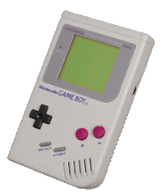

The game on this site is modeled on a popular video game from the late 19080s, called Boxxle. Although there are emulators for this game, this site is a complete re-write of the game utilizing web technologies (HTML, CSS, Javascript, and JQuery). Everything that you need to play the game was downoladed as part of this webpage. There is nothing for you to install. Each time you wish to play the game, all you have to do is visit this site. We are leveraging the latest technologies from HTML5 to save your game statistics so you can keep track of your previous scores.The game is light weight and demands very little resources from your system. Because of this, we were able to optimize the game for all modern platforms; to include smartphones, tablets, laptops, and desktop systems.
add some more instructions and screencasts or screen shots once we have the completed UI to show how to start game, play game. If we add more than one level, we will show how to move to the next level.
Boxxle was a single player, multiplatform, puzzle video game released by Fujisankei Communications International. Its Japanese title is Soukoban. Boxxle is a Sokoban clone, with the plot being that the player must maneuver boxes in a warehouse in order to make enough money to woo his desired girlfriend. It had a sequel called Boxxle 2.
Boxxle was originally released in September of 1989 for the Game Boy platform. The Boxxle development team was from the "Thinking Rabbit" software house based in Takarazuka, Japan.The Game Boy platform was released the same year that the Boxxle game developme twas completed. Although the Game Boy is weak by todays standards with its 8-bit processor, a clock rate of 4.19 Mhz and 8kB of internal video memory, it was technically advance for its time. It brough increased visibility to the company who manufactured the device; Nintendo.
The video below, shows the original Boxxle game being played on the Game Boy portable console. You will notice the simple elegance of the game. You may also notice that the game was only available in black and white when it was released. Because the internet as we know it today did not exists when this game was released, players did not use a network connection to play the game. The game was installed on the Game Boy system by plugging in a memory card that contained the game code.